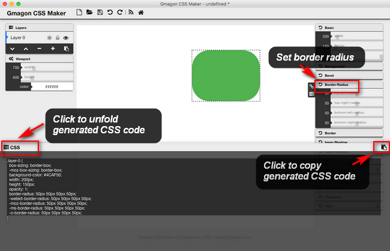

The border-radius CSS property allows Web authors to define how rounded border corners are. The curve of each corner is defined using one or two radii, defining its shape: circle or ellipse. In this article, we explore how to code border-radius in CSS quickly and easily.
Example
Add rounded borders to a div element:
Definition and Usage
The border-radius property is used to add rounded corners to an element.
The border-radius property is a shorthand property for setting the four border-*-radius properties.
If you specify only one value for the border-radius property, this radius will be applied to all 4 corners.
However, you can specify each corner separately if you wish. Here are the rules:
- Four values: first value applies to top-left, second value applies to top-right, third value applies to bottom-right, and fourth value applies to bottom-left corner
- Three values: first value applies to top-left, second value applies to top-right and bottom-left, and third value applies to bottom-right
- Two values: first value applies to top-left and bottom-right corner, and the second value applies to top-right and bottom-left corner
- One value: all four corners are rounded equally
Four values - border-radius: 15px 50px 30px 5px:
Three values - border-radius: 15px 50px 30px:
Two values - border-radius: 15px 50px:
One value - border-radius: 50px - all four corners are rounded equally
Example 1
border-radius:2em;
is equivalent to:
border-top-left-radius:2em;
border-top-right-radius:2em;
border-bottom-right-radius:2em;
border-bottom-left-radius:2em;
Example 2
border-radius: 2em 1em 4em / 0.5em 3em;
is equivalent to:
border-top-left-radius: 2em 0.5em;
border-top-right-radius: 1em 3em;
border-bottom-right-radius: 4em 0.5em;
border-bottom-left-radius: 1em 3em;
More Examples
Example
Three examples with rounded corners:
For a CSS beginner, you may feel it’s hard and time-consuming to write border radius code in CSS manually. In this situation, we would recommend using Gmagon CSS Maker to make things much easier.
